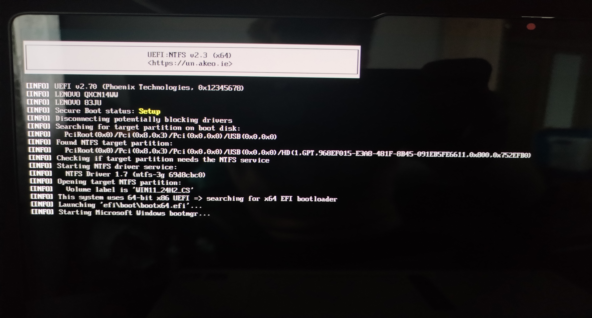
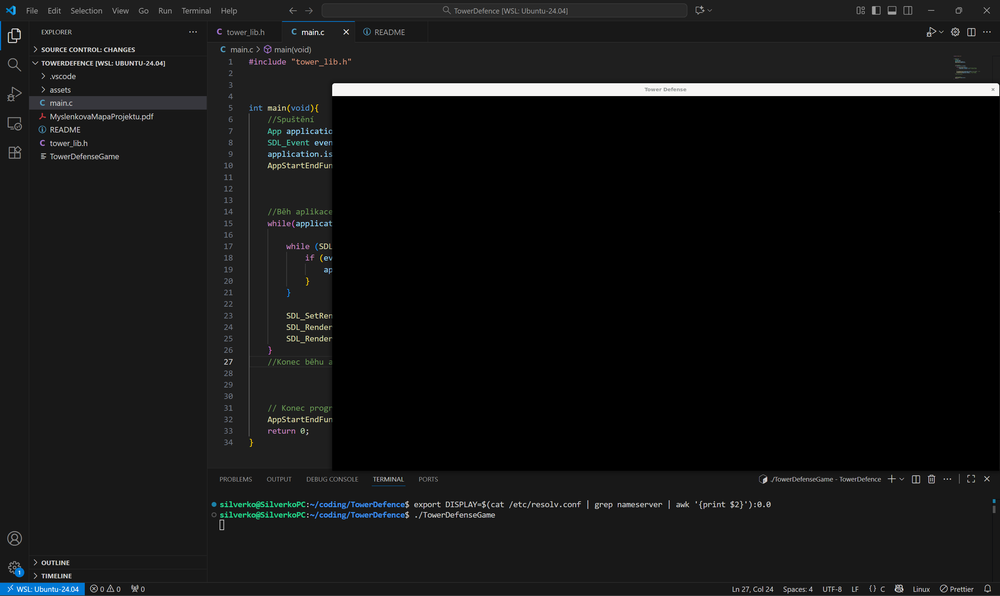
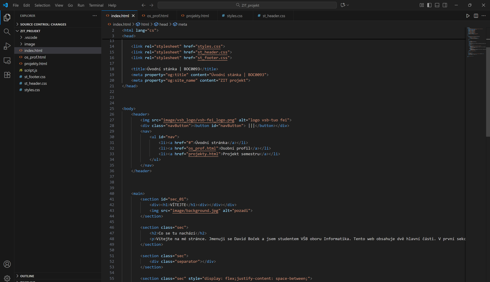
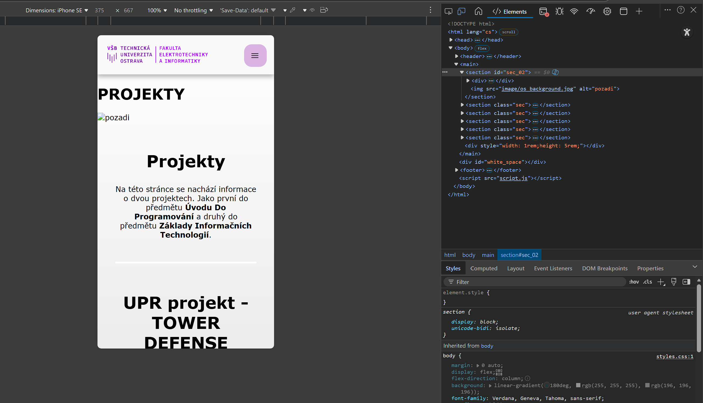

PROJEKTY

Projekty
Na této stránce se nachází informace o dvou projektech. Jako první do předmětu Úvodu Do Programování a druhý do předmětu Základy Informačních Technologií.
UPR projekt - TOWER DEFENSE
Tento projekt se programuje v programovacím jazyce C s knihovnou SDL 2 a tudíž nelze použít žádné vývojové prostředí jako je např. Godot a tak se celá hra bude dělat v textovém editoru VS code. Hra je vyvájená na subsystému Ubuntu neboli WSL Ubuntu ve Windowsu 11 a to zdůvodu, že na linuxové distribuci Fedora daná SDL knihovna je problémová a nachází se tam problém s nefunkčními #include soubory.
Danná hra je rozdělena do dvou primárních souborů jako aplikací a to do knihovny tower_lib.h a do hlavního souboru main.c. Veškerá deklarace funkcí či datových typů nebo i ostatních knihoven se bude nacházet v tower_lib.h, ale samotný program se bude nacházet v main.c, který akorát volá vešeré funkce či deklaroané datové typy z této knihovny.

ZIT projekt - WEBOVÁ STRÁNKA
Projekt lze stáhnout ZDE
Tento projekt se vyvájí ve vývojovém prostředí VS code a to s jazyky JavaScript, CSS3 a HTML5. V tomto projektu nejsou použité žádné API či jakékoliv jiné frameworky. Celý projekt je dělaný ručně. Teda až na JS neboť neumím v tomto jazyce programovat a tak využiji už starší kód z bývalých projektů.
Jako první se v projektu udělalo logo, poté header a footer pro počítačové rozhraní. Poté se udělal text a zbytek designu. Pak se udělalo header menu pro mobilní zařízení. Poté se dodělal obsach veškerých dalších stránek a ty se taktéž přizpůsobili mobilním zařízením. Po té se šlo k nahrání projektu na homel.vsb.cz a debugování grafických chyb pomocí 3 různých zařízení a opravování chyb textu.

